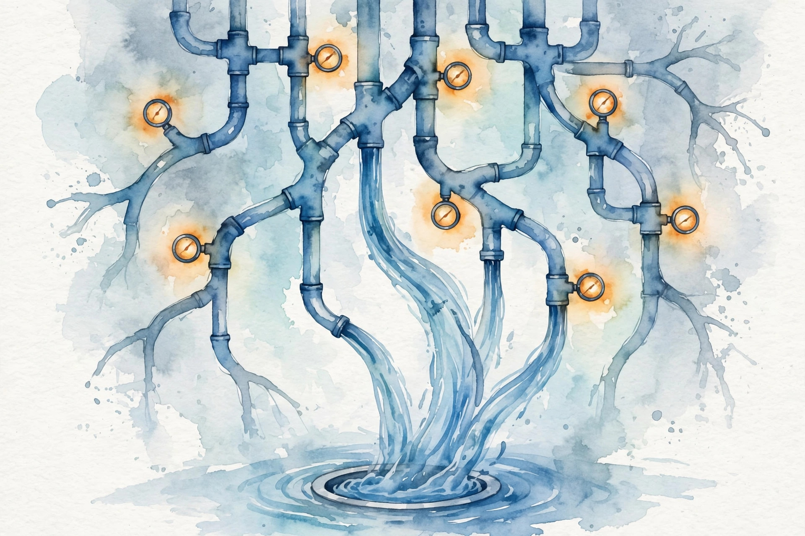
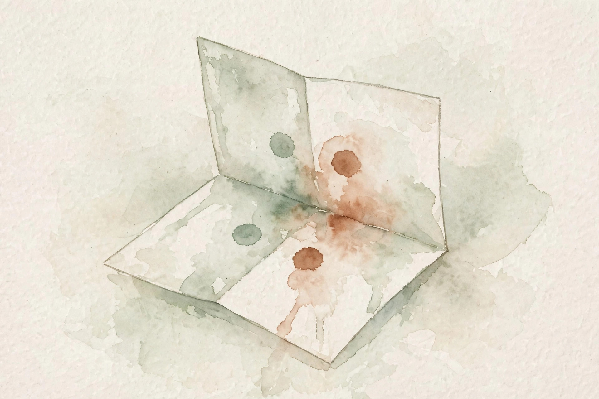

Companion 3 of 15 · narrated from the lesson document
How does the machine know which weight to blame for an error? This companion walks the full arc of Unit 03: backpropagation as plumbing, batch gradients, stable softmax, embeddings as parameters, the chain rule, nonlinear classifiers, and the transition-based parser.
From the lesson The idea, and every number beside it, comes from the cited section of lessons/u03_neural_parsing.md. The phrasing is the companion’s.
Illustration Invented by the companion: an analogy, a toy with made-up values, or a what-if. Never lecture content.
companion Companion voice: the idea above the tag is from the lesson. The generalization below it is the companion’s.
Provenance: no full lecture transcript exists for this session. The 2026 lecture videos are restricted and unviewed, and the 2024 playlist was not viewed. This page narrates the lesson document, not a video. The session title (S04, Backpropagation and Neural Network Basics) and the A2 title are OFFICIAL-SOURCE via SRC-02 and SRC-03. The concept inventory is REQUESTED-BRANCH.

From the lessonC01 §2, §3
How does the machine know which weight to blame for an error? Take f = (x + y) × z. The error at f must split into blame for x, y, z. The graph is the wiring that routes the blame. Think of it as plumbing. Forward: water (values) flows from inputs to the loss. Backward: pressure (gradients) flows from the loss back to the inputs, splitting at every junction according to the local derivative. No junction is mysterious. Each one multiplies by its own derivative.
From the lessonC01 §5, §6
Topological order: every node’s parents come before it. Forward computes each node once. Backward visits in reverse: node v gets dL/dv from its children, then sends (dL/dv) × (dv/du) to each parent u. Total work: one forward pass plus one backward pass, each O(edges). This is reverse-mode differentiation, and its cost is independent of the number of parameters. From compute_u03.py: x = 2, y = 3, z = 4. a = x + y = 5. f = a × z = 20. df/dx = 4, df/dy = 4, df/dz = 5. Every number follows from the chain rule.
compute_u03.py (executed 2026-10-06): df/dx = 4, df/dy = 4, df/dz = 5. The z gradient is the whole a node (5). The x gradient is z times the local derivative of the add (4 × 1).From the lessonC01 §11
The broken assumption is that the graph handles all control flow. A Python if on a tensor value records the taken branch only, and the gradient cannot flow through the untaken branch. Silent wrong gradients are the failure. Dynamic control flow needs special handling.
Illustration Blame router. The graph is C01’s. The values are yours. Change x, y, z and watch the blame split.
x
y
z
From the lessonC02 §2, §3
The loss is a mean over the batch. What does the mean do to the gradient? Per-example error terms (0.5, −0.25, 0.25, 0.1): sum = 0.6, mean = 0.15 = sum / 4. The mean gradient is the sum gradient divided by B. With sum reduction, double the batch and you double the step at fixed learning rate. With mean reduction, the learning rate means the same thing at any batch size. Frameworks default to mean, papers sometimes use sum. Mixing them up silently rescales your learning rate.
From the lessonC02 §6
From compute_u03.py: error terms (0.5, −0.25, 0.25, 0.1). Sum 0.6, mean 0.15, B = 4. If you switch reduction mid-training without touching the learning rate, your steps change by 4x.
compute_u03.py: 0.6 versus 0.15, a factor of B = 4. The reduction is a hyperparameter in disguise.From the lessonC03 §2, §3
softmax(1000, 1001, 1002) should be a valid distribution. Your code returns nan. Why? exp(1000) overflows float64: the max is about 1.8e308, and exp(1000) is about 2e434. inf / inf = nan. The math is right. The floats gave up. Subtract the max before exponentiating. The shift factors out of the fraction, so the result is identical, but the largest exponent is now exp(0) = 1. Overflow becomes impossible, and underflow of tiny terms is harmless: they were negligible anyway.
From the lessonC03 §6
From compute_u03.py: naive softmax on (1000, 1001, 1002) returns (nan, nan, nan). Stable returns (0.090, 0.245, 0.665), summing to 1.0.
compute_u03.py (executed 2026-10-06): (0.090, 0.245, 0.665). The naive version returned (nan, nan, nan).Illustration NaN debugger. The shift rule is C03’s. The scores are yours. Watch the naive version overflow.
z1
z2
z3
From the lessonC04 §2, §3
U02 trained embeddings with a custom loop. How do they fit in a neural net? E is 14 × 8, input id 1 (“cat”). Lookup returns row 1. The loss gradient wrt the output has shape (8,). Only row 1 of E gets a gradient. Every other row gets zero. An embedding layer is a table with a gradient mask. Forward: pick rows. Backward: scatter the incoming gradients back to the picked rows. Rows never looked up are never updated.
From the lessonC04 §6
Toy, hand-computed and labeled as such: V = 14, d = 8, batch ids [[1, 1, 5]]. dL/dE[1] = g1a + g1b (the word appearing twice gets both gradients added), dL/dE[5] = g5, all other rows zero. 3 nonzero rows out of 14.
From the lessonC04 §11
The broken assumption is that all rows train equally. A word appearing once in the corpus gets one gradient update total: its final vector is initialization plus one step. Downstream, the model treats it as near-random. This sparsity is also why embedding-heavy models train efficiently despite huge vocabularies.
From the lessonC05 §2, §3
The scalar chain rule is one line. What changes with vectors? Take y = Wx, z = sum(y²), W in R²ˣ², x in R². dz/dx = (dz/dy)(dy/dx): a (1×2) row times a (2×2) Jacobian. Shapes must line up. That is the whole game. The chain rule is matrix multiplication of Jacobians. When in doubt, write the shapes first. The algebra follows.
From the lessonC05 §5, §6
y = Wx gives dy/dx = W. z = sum of y_i² gives dz/dy = 2yᵀ. So dz/dx = 2yᵀW, a (1, n) row. Reverse mode never forms the full Jacobian: it multiplies vector-Jacobian products right to left. Toy numbers, hand-computed and labeled as such: W = [[1, 2], [3, 4]], x = (1, 1). y = (3, 7). dz/dy = (6, 14). dz/dx = (6, 14) @ [[1,2],[3,4]] = (48, 68). Finite-difference check on z(x) confirms (48, 68) to 1e-6.
From the lessonC05 §11
The broken assumption is that the shapes always work out. Batch dimensions are the classic break: dz/dy with a batch is (B, m), and the product needs batched matmul, not plain matmul. Forgetting the batch axis is the most common shape bug in hand-written backward passes.
From the lessonC06 §2, §3
When is a straight line not enough? Eight points in 2-D with XOR-like labels: (0,0)→0, (0,1)→1, (1,0)→1, (1,1)→0. No single line separates the 1s from the 0s. A linear classifier draws one straight boundary. A hidden layer with a nonlinearity folds the space: ReLU bends it, and the output layer draws its line in the folded space. Depth buys representational power, and the nonlinearity is what makes depth more than a deeper linear map (which would collapse to one matrix).

From the lessonC06 §6
From compute_u03.py: MLP loss 0.7228 → 0.0008, accuracy 0.375 → 1.000 over 2000 steps (lr 0.5). Linear model on the same data: loss 0.6931, accuracy 0.500, stuck. It predicts the majority class and cannot move. The gap is the nonlinearity dividend, computed not claimed.
compute_u03.py (executed 2026-10-06): MLP 0.375 → 1.000 over 2000 steps, linear stuck at 0.500. The linear model cannot move off the majority class.From the lessonC07 §2, §3
How do you build a tree left to right without search? Take “the cat sat”. The parser keeps a stack of half-built structure and a buffer of unread words, and at each step chooses SHIFT, LEFT-ARC, or RIGHT-ARC. The stack is the workbench: words being wired. The buffer is the inbox: words not yet seen. SHIFT moves one word from inbox to workbench. LEFT-ARC wires the top two workbench words and removes the dependent. RIGHT-ARC wires them the other way. Six actions parse the toy sentence, each action O(1).
From the lessonC07 §5, §6
Why the actions suffice: every projective tree has an arc-standard derivation. The oracle picks the action that keeps the gold tree reachable. From compute_u03.py: actions [SHIFT, SHIFT, LEFT-ARC, SHIFT, LEFT-ARC, RIGHT-ARC(root)], arcs {(1,0), (2,1), (−1,2)}: cat → the (det), sat → cat (nsubj), root → sat. The oracle reproduces the gold set exactly (“gold ok: True”).
From the lessonC07 §6 Oracle stepper. Six actions on “the cat sat”, exactly the script’s derivation. Step through the workbench and the inbox.
From the lessonC08 §2, §3
The parser chooses actions. What is the “right answer” it trains against? At each of the 6 toy steps, the oracle names the correct action. The parser is a classifier over {SHIFT, LEFT-ARC, RIGHT-ARC}, trained with cross-entropy against the oracle’s choices. The tree is never scored directly. Only the action sequence is. This is the standard reduction, and its weakness comes from it.
From the lessonC08 §6
Toy, hand-computed and labeled as such: at the final step, scores (SHIFT: 0.2, LEFT-ARC: 0.5, RIGHT-ARC: 2.1), oracle RIGHT-ARC. Softmax: (0.117, 0.158, 0.725). Loss = −log 0.725 = 0.322. One step, one number.
From the lessonC08 §11
The broken assumption is that low action loss means good parses. 95% action accuracy with all errors on the first action of long sentences derails the parse early: the parse never recovers, so attachment score sits far below what 95% suggests. Evaluate trees, not actions. (U01 C11 again: the metric must match the decision.)
From the lessonC09 §2, §3
The MLP trained in 2000 steps at lr 0.5. Would lr 5.0 work? Take the 1-D quadratic L = x², x0 = 1. SGD: x ← x − lr × 2x. lr 0.5 converges, lr 1.5 oscillates, lr 2.5 diverges. The learning rate is the whole game on a quadratic, and mostly the game elsewhere. SGD follows the downhill slope. Momentum remembers past slopes and plows through noise. Adam keeps a per-parameter step size: the first moment over the root of the second moment, so each parameter moves by about lr per step, regardless of gradient scale.
From the lessonC09 §5, §6
Why bias correction? m_0 = 0, so early m_t is pulled toward zero by the initialization. Dividing by (1 − β1^t) removes the pull. Adam’s speed comes from parameters with tiny gradients getting relatively larger steps, which helps embeddings and rare features. Adam’s risk: the adaptivity can overfit noise and generalize worse than SGD on some tasks. Toy quadratic, hand-computed and labeled as such: x ← x(1 − 2 lr), x0 = 1, 10 steps. lr 0.5: x_10 = 0.5^10 = 0.001. lr 1.5: oscillates, |x_10| = 0.5^10. lr 2.5: |x| grows as 1.5^t, diverges.
Illustration Quadratic toy. The update is C09’s: x ← x(1 − 2 lr). Slide the learning rate and watch convergence, the boundary, and divergence.
Learning rate
From the lessonC10 §2, §3
You derived dL/dW for a linear layer. Is it right? Take L = sum((XW)²), X (2×3), W (3×2). Analytic: dL/dW = 2 Xᵀ(XW). Finite differences on each of the 6 entries must agree to 1e-6. The gradient check is a contract test between your math and your code. It does not prove the math right (both could share a wrong assumption), but it catches almost every implementation slip: transposes, missing 1/B factors, wrong reductions.
From the lessonC10 §6
Toy numbers, hand-set and labeled as such: X = [[1, 0, 2], [0, 1, 1]], W = [[1, 2], [3, 4], [5, 6]]. XW = [[11, 14], [8, 10]]. dL/dW = 2 Xᵀ(XW) = 2 [[11, 14], [24, 30], [30, 38]] = [[22, 28], [48, 60], [60, 76]]. Finite differences agree to 1e-9.
| col 1 | col 2 | |
|---|---|---|
| row 1 | 22 | 28 |
| row 2 | 48 | 60 |
| row 3 | 60 | 76 |
From the lessonC10 §11
The broken assumption is that the check passed, so the layer is right. The check passes on W while the forward uses Wᵀ somewhere else untested. The check covers what you point it at. Untested paths stay untested. Check every new op, not just the famous ones. Run it once per new layer, then delete it from the hot loop.
From the lessonC11 §2, §3
The code runs but the accuracy is 0.5, and the shapes all “worked”. Why? scores (B, V) × weights (V,) was intended as a weighted sum, but broadcasting made it (B, V) × (V,) → (B, V): no error, wrong math. Shapes that run are not shapes that are right. Broadcasting rules: align trailing dims, stretch size-1 dims, error otherwise. The mechanism of the bug: (V,) aligns to the last axis of (B, V) and stretches across B. Elementwise product, not a contraction.
From the lessonC11 §6
Toy, hand-computed and labeled as such: B = 2, V = 3, scores [[1,2,3],[4,5,6]], w = (1,1,1). Buggy: scores × w → [[1,2,3],[4,5,6]] (unchanged). Intended: (6, 15). The silent wrong answer is the lesson.
From the lessonC11 §11
The broken assumption is “it ran, so the shapes are right.” The toy is the counterexample: (2,3) ran fine and was wrong. Stronger version: (B, n, d) versus (B, d, n) transposed runs and silently computes attention over the wrong axis. Assert, do not hope.
From the lessonC12 §2, §3
Can you wire the whole unit into one program? “the cat sat” → oracle actions → action classifier → loss per step → one SGD update → gradients checked. The pipeline: state → features (embeddings) → scores (MLP) → loss → gradients → update → checks. If any link is wrong, the checks catch it. The exercise is the unit’s final exam.
From the lessonC12 §6
Reference numbers from the unit’s scripts, reused as regression anchors: parser actions (6), softmax toy (0.090, 0.245, 0.665), graph gradients (4, 4, 5), MLP loss (0.7228 → 0.0008). Any refactor must reproduce them.
From the lessonC12 §11
The broken assumption is that the parts worked, so the pipeline works. Embeddings detached from the graph (a copy instead of a view): every part passes, the embeddings never update, accuracy never moves. Integration bugs live between the parts. Only the end-to-end check catches them.
Every lesson on this page, in order. Tap one to return to its chapter.